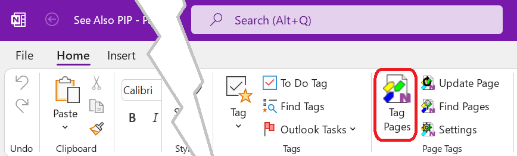
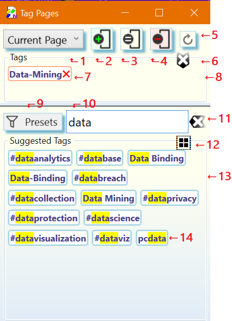
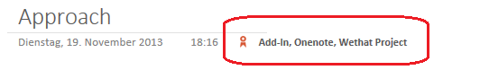
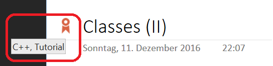

Managing Page Tags on OneNote Pages
The Tag Pages dialog is used to apply Page Tags to one ore more OneNote pages in various ways.

To acivate the Tag Pages dialog click or tap on the Tag Pages
button of the Page Tags group in the Home tab of the OneNote ribbon.
The Tag Pages Dialog
☝️ Numbered dialog elements are referenced by superscripts and list item indices.

The tagging scope selector. Defines the range of pages to apply the tagging operation to. Available ranges are Current Page (default), Selected Pages, and Current Section.
☝️ If you have chosen the Selected Pages option you may at this point select any number of pages in the current OneNote section. Do not close the Tag Pages dialog while selecting pages in OneNote. To select multiple pages remember to hold the
CTRLkey during selection.Add all tags shown in the Tags panel8 to the range of the selected range of pages1. This tagging operations is performed in the background.
Set the tags of the range of selected pages1 to exactly the tags shown in the Tags panel8. With the exception of imported tags, This replaces all Page Tags in the rage of pages. This tagging operations is performed in the background.
Remove all tags shown in the Tags panel8 from the selected range of pages1.This tagging operations is performed in the background.
Updates Saved Searches embedded in the selected range of pages1 and also, if enabled on the Preferences tab of the Manage Settings dialog, updates imported OneNote and hashtags found in page content.
☝️ This action is similar to the Update command except that it can perform updates on more that one page.
Clear the tags selected for tagging in the Tags pane8.
A tag selected for a tagging operation. A click or tap on this tag removes it from the Tags panel8.
The Tags panel. Contains all tags selected for a subsequent tagging operation2,3,4.
Tag presets. Filters the collection of tags currently available in the Suggested Tags panel13. The tag presets are entered into the tag input box10as comma separated list and applied as a filter to the Suggested Tags panel13. The Add Matching Tags action12 can then be used to add all fully matching tags to the Tags panel8 for a subsequent tagging operation.
Tag input box for entering one or more tags (comma ',' separated). Tags in the Suggested Tags panel13 are filtered and highlighted as you type. Following keyboard shortcuts are supported while focus is on the input box:
ESC- Clear the input box. Same as pressing the Clear button11.
SHIFT+ESC- Clear the input box (Same as pressing the Clear button11) and also deselect all tags in the Tags panel8.
ENTER- Add the typed list of tag names to the Tags panel8 for use in subsequent tagging operations. Tag names are updated according to the Tag Format selected on the Preferences tab of the Settings dialog, if they are new.
SHIFT+ENTERorCTRL++- Same action as pressing
ENTERand clicking the Add button2. CTRL+ENTERorCTRL+-- Same action as pressing
ENTERand clicking the Remove button4. SHIFT+CTRL-ENTER- Same action as pressing
ENTERand clicking the Set button3.
Clears the tag input box10 and removes all highlight from the Suggested Tags panel13.
Add all tags which fully match the tag names enterd in the tag input box10 to the Tags panel8 for tagging.
The Suggested Tags panel containing the collection of tags available for tagging.
An available tag with a match highlight of the partial tag name entered in the tag input box[10(#Dia-10).
Workflows
Applying Tags to one or more Pages
Browse to a OneNote page you intend to tag.
Choose the range of pages to apply the tags to1
Specify the tags to apply. The tags to be used in a tagging operation can be selected by:
clicking or tapping on one or more tags in the Suggested Tags panel13. Selected tags are added to the Tags panel8. To deselect a tag, click or tap on it in the Tags panel8.
☝️ If the Suggested Tags panel13 contains a large number of tags, enter a comma separated list of partial tag names into the tag input box10 to filter down the number of tags displayed. The tag suggestions13 are updated as you type to show matching tags.
typing one or more tag names separated by comma ',' into the tag input box10. Press
ENTERto add all tags to the Tags collection8 or use another keyboard shortcut supported by tag input box10.Choose the one of the tagging operations2,3,4. All tagging operations are performed in the background.
When the requested tagging operation is complete, the result is shown on the affected range of pages according to the tag display options selected on the Preferences tab of the Settings dialog:
Below Page Title

⚠️ The tags displayed on the top of each tagged page are meant to be read-only. However, OneNote does not have any concept of read-only, so it is possible to manually edit the tags displayed on the page. If manual edits happened the internal tag database of the OneNote Tagging Kit is out-of-sync with the tags displayed on the page. Press the Update button5 to resynchronize the tags with the internal database.
In Page Title

☝️ If any of the tag import options is checked on the Preferences of the Settings dialog, imported OneNote tags or hashtags from page content will show up as well.
Updating imported Tags and Saved Searches
Browse to a OneNote page you intend to update.
Choose the range of pages to update1.
Start page updates by clicking on the Update button5. Page updates are performed in the background.
⚠️ Pages containing Saved Searches can take a long time to update.
For more information about the purpose effect of page updates see the Update command.
☝️ Updating pages is also useful to update tag display after changing tag related options on the Preferences of the Settings dialog.